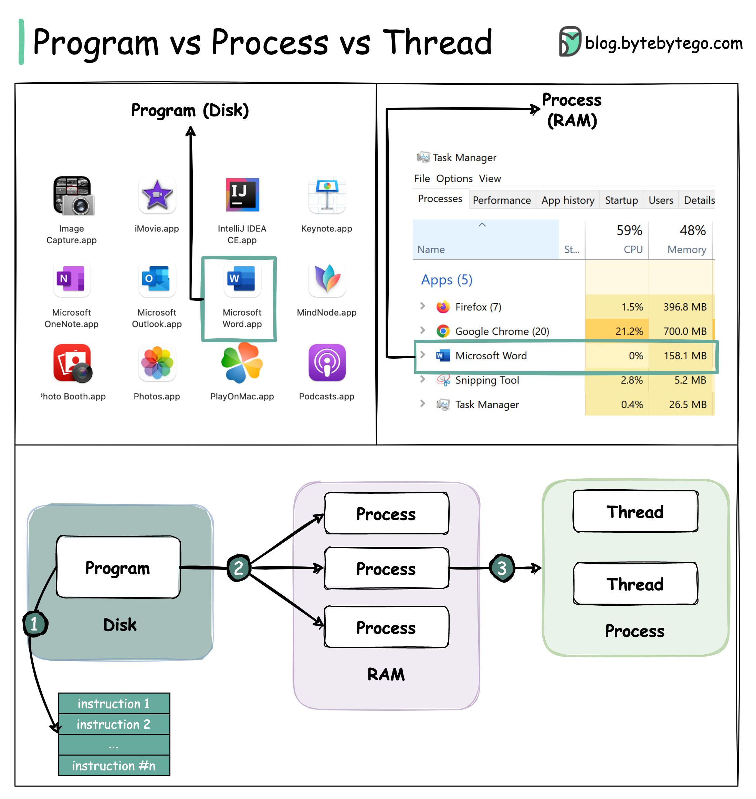

To better understand this question, let’s first take a look at what a Program is. A Program is an executable file containing a set of instructions and passively stored on disk. One program can have multiple processes. For example, the Chrome browser creates a different process for every single tab.
A Process means a program is in execution. When a program is loaded into the memory and becomes active, the program becomes a process. The process requires some essential resources such as registers, program counter, and stack.
A Thread is the smallest unit of execution within a process.
The following process explains the relationship between program, process, and thread.
The program contains a set of instructions.
The program is loaded into memory. It becomes one or more running processes.
When a process starts, it is assigned memory and resources. A process can have one or more threads. For example, in the Microsoft Word app, a thread might be responsible for spelling checking and the other thread for inserting text into the doc.
Processes are usually independent, while threads exist as subsets of a process.
Each process has its own memory space. Threads that belong to the same process share the same memory.
A process is a heavyweight operation. It takes more time to create and terminate.
Context switching is more expensive between processes.
Inter-thread communication is faster for threads.